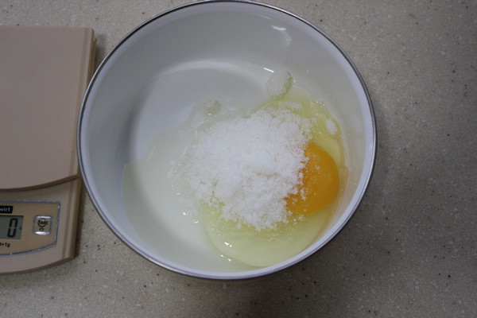
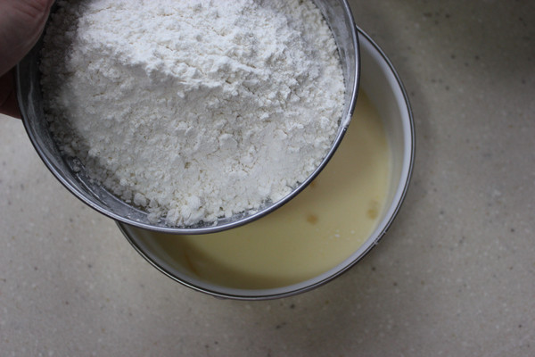
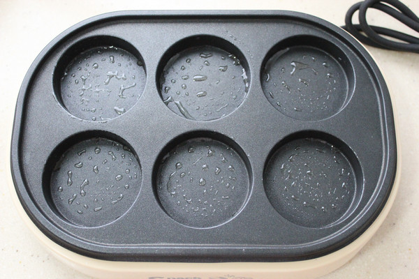
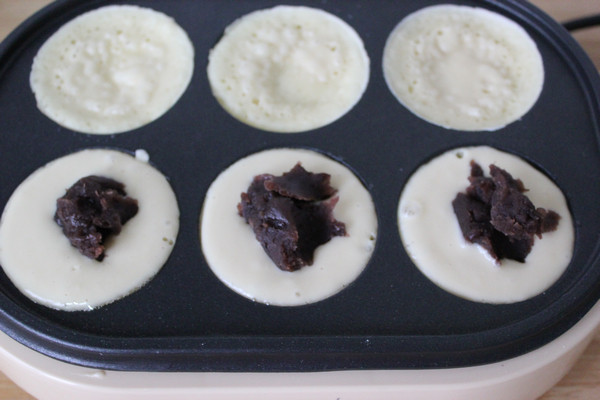
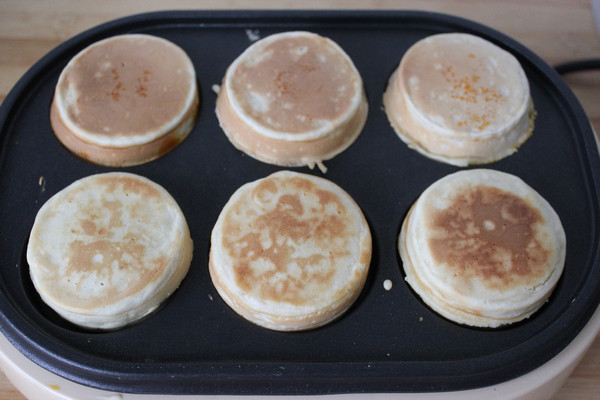

车轮饼
吃起来不但香酥脆甜，且有响声。有一位吃过车轮饼的顾客说：“我到过西欧，到过美国，走遍东西南北，
未见过比车轮饼更味美的点心。可见它是精美绝伦的妙品”。车轮饼起于泗阳县（原桃源县）洋河镇，名声远扬。
材料： 鸡蛋60g、牛奶100g、低筋面粉100g、豆沙150g
辅料：细砂糖25g、蜂蜜10g、黄油15g、香草油0.5ml、无铝泡打粉2g

烹饪步骤

1.鸡蛋打入碗中

2.家入砂糖、香草油打散
3.加入牛奶和融化的黄油

4.分多次筛入面粉和无铝泡打粉
5.上下切拌均匀

6.车轮饼机抹少许油，小火加热
7.放入适量面糊

8.放入豆沙馅
9.将没有面糊的那一半覆盖下来，即成一个车轮饼

10.依次做出所有的车轮饼